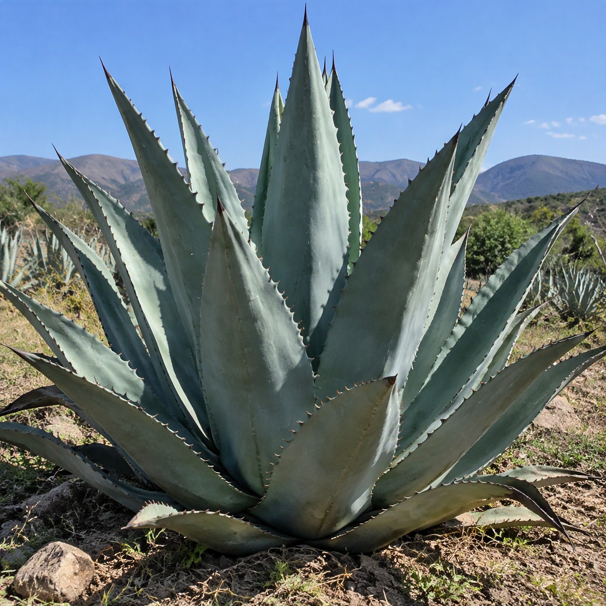
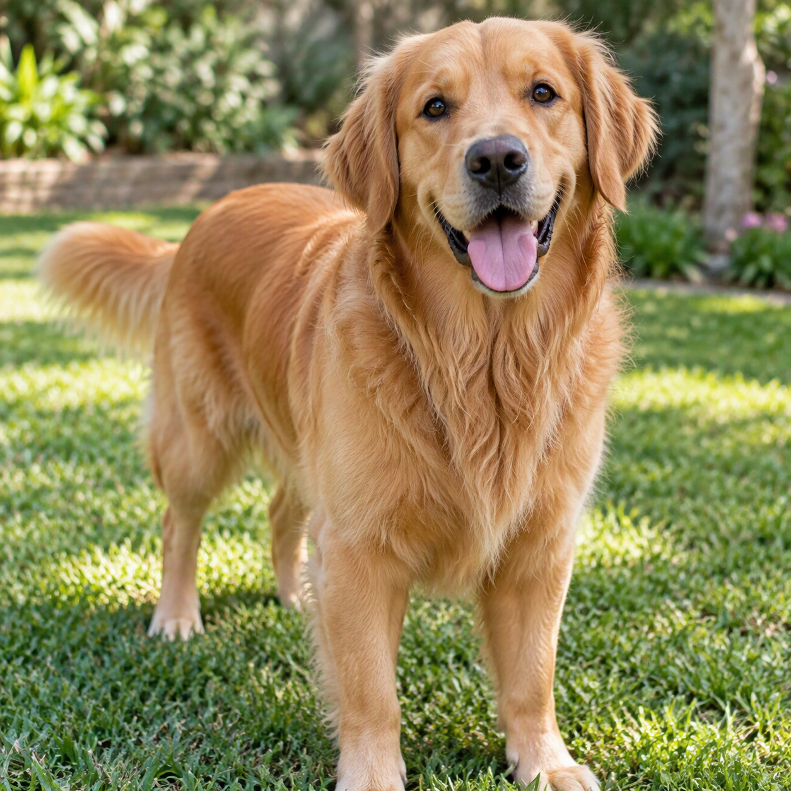
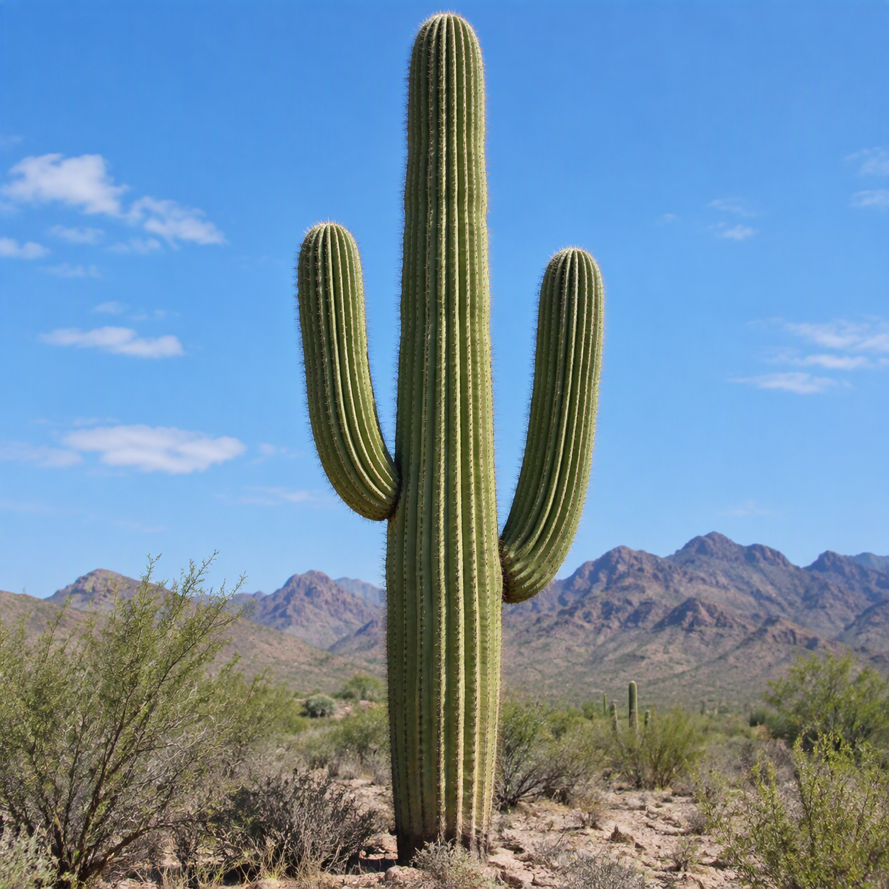
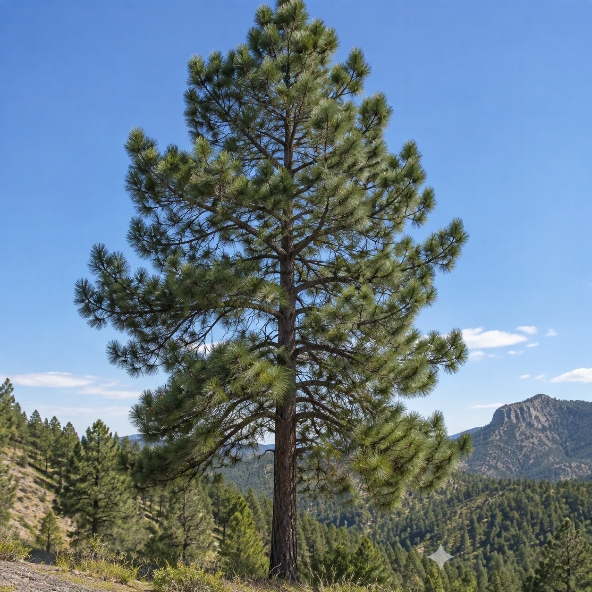
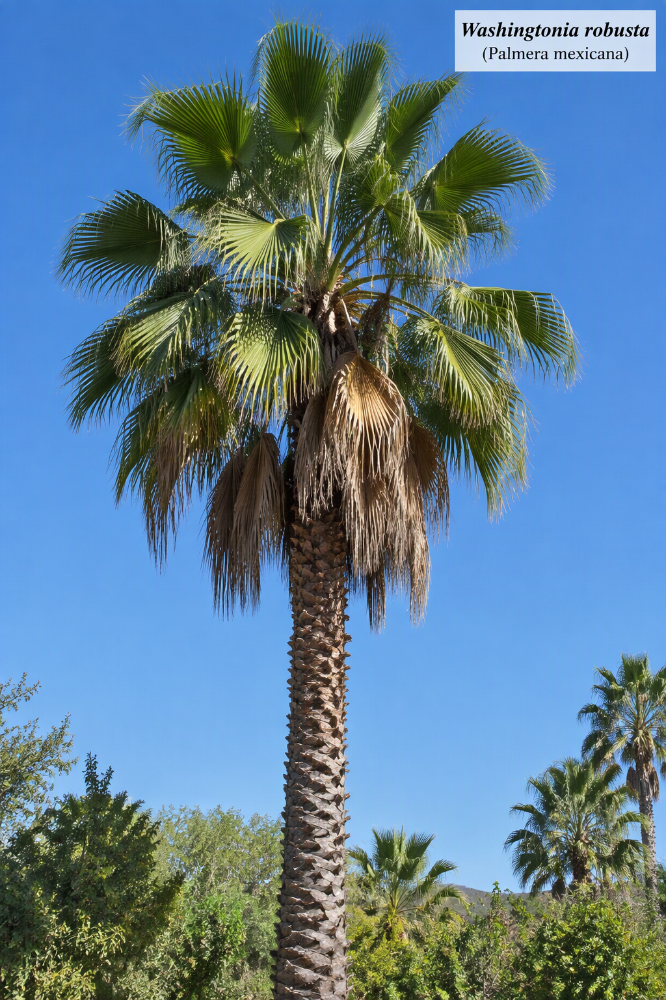
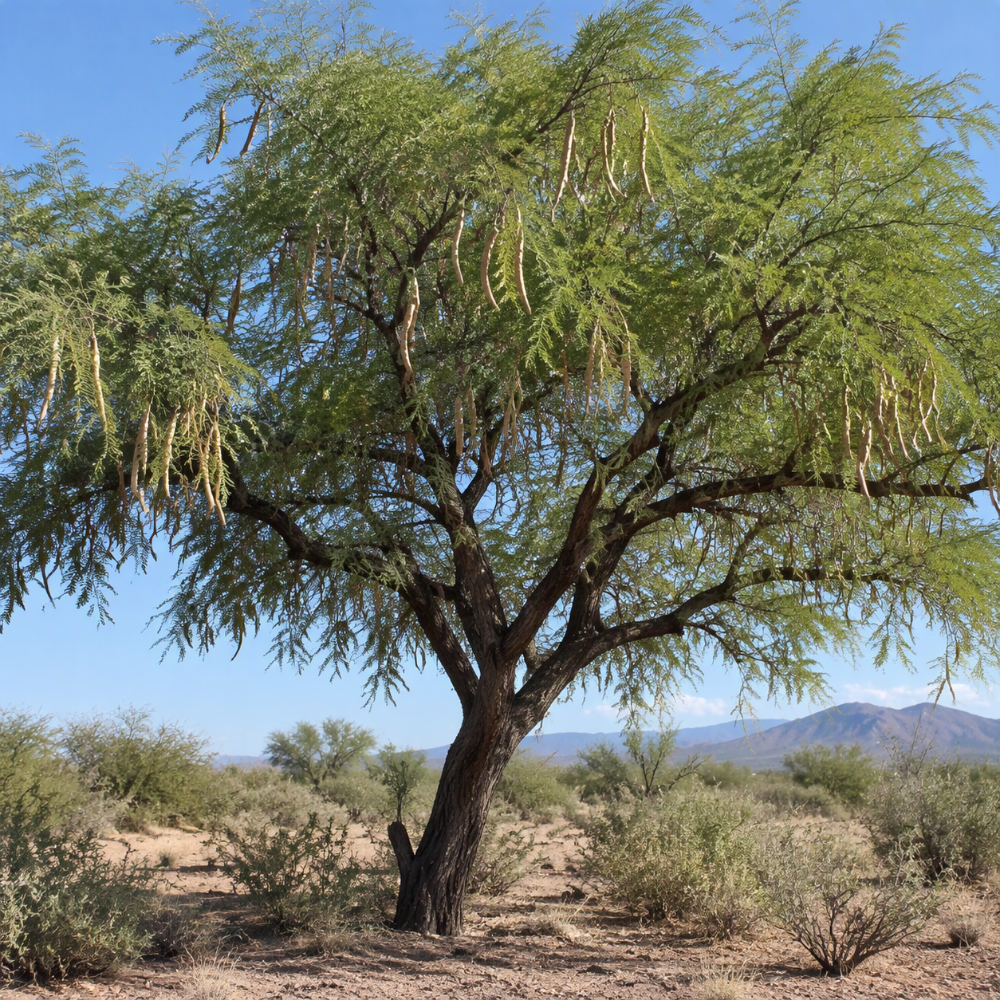
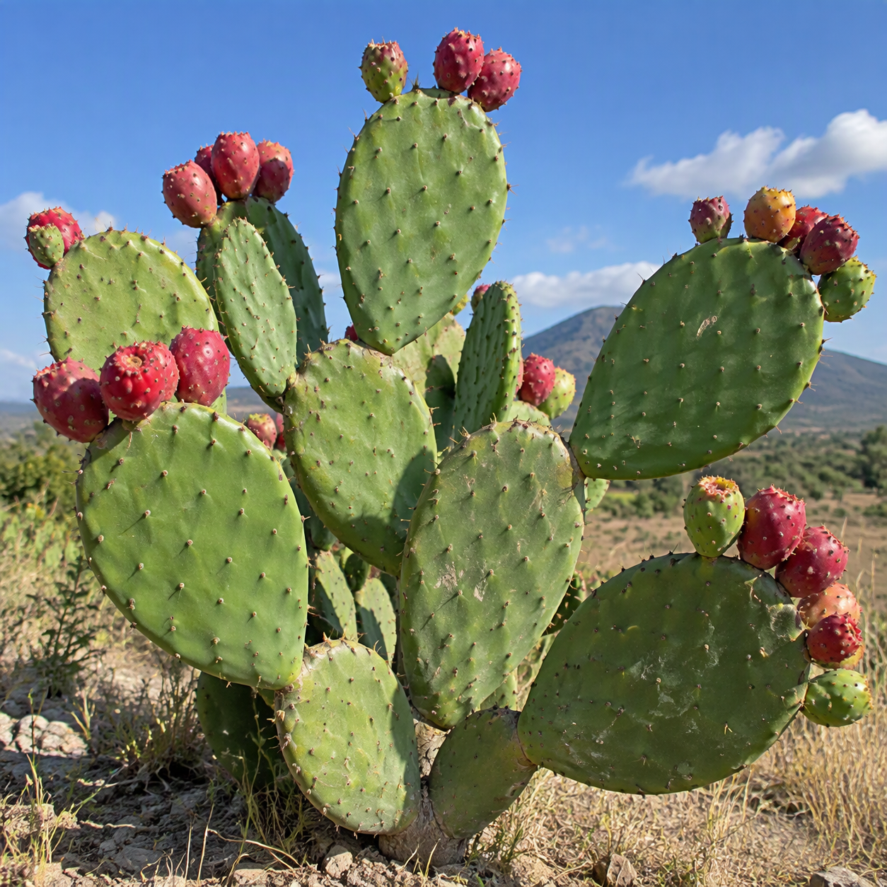
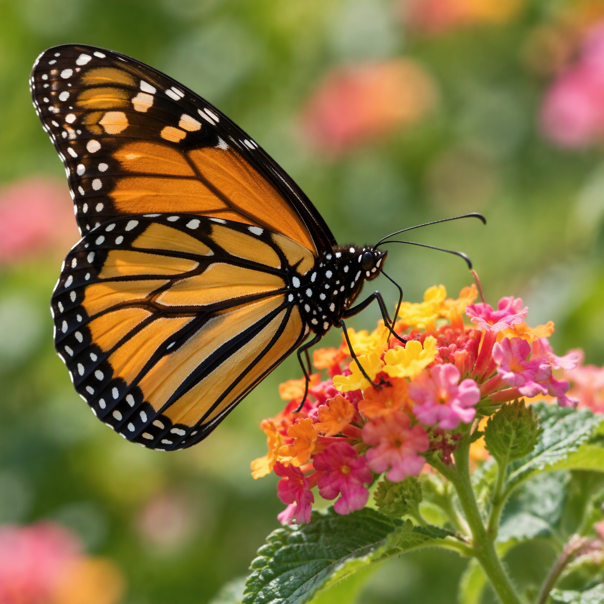
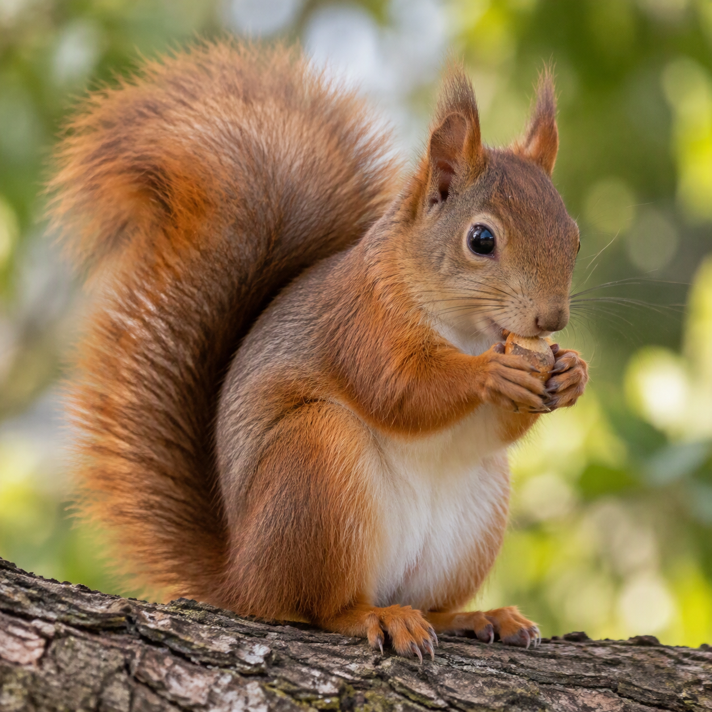
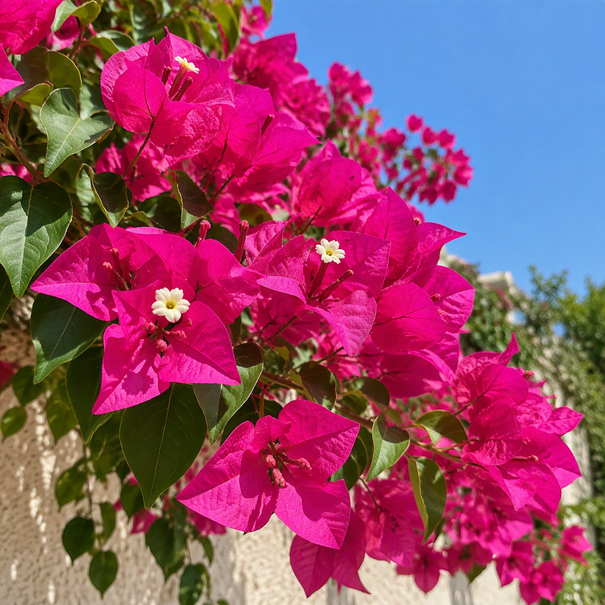

Integrantes del equipo: Yarensi Guerrero, Alondra Vidal, Alexander Valtierra y Missael Macias
Trabajo de Etica Profesional
Este catalogo ecologico tiene como objetivo conocer e identificar diferentes seres vivos que forman parte de la Universidad Tecnologica de Aguascalientes
Presentamos diez especies entre plantas y animales, describiendo sus caracteristicas y la importancia que tienen para el medio ambiente.
La sostenibilidad ambiental es fundamental para conservar los recursos naturales y garantizar una buena calidad de vida.
Gracias a la naturaleza obtenemos agua, alimentos, oxigeno y materias primas. Ademas, los ecosistemas mantienen el equilibrio entre los seres vivos.
Cuidar el medio ambiente nos permite tener una vida digna, saludable y segura, sin comprometer los recursos de las futuras generaciones.

Nombre científico: Agave americana
Tipo: Planta suculenta.
Características: Tiene hojas largas, gruesas y puntiagudas que crecen formando una roseta.
Importancia: Ayuda a conservar el suelo y sus flores proporcionan alimento a murciélagos y otros polinizadores.

Nombre científico: Canis lupus
Tipo: Mamifero.
Caracteristicas: Es un animal doméstico, tiene cuatro patas, pelaje y un sentido del olfato desarrollado.
Importancia: Forma parte de la relación entre los seres humanos y los animales y requiere cuidados responsables.

Nombre científico: Cactaceae
Tipo: Planta suculenta.
Características: Tiene tallos gruesos que almacenan agua y generalmente presenta espinas.
Importancia: Está adaptado a ambientes secos y puede proporcionar alimento y refugio a diferentes animales.

Nombre científico: Pinus
Tipo: Árbol.
Características: Tiene hojas delgadas en forma de aguja y produce conos llamados piñas.
Importancia: Captura dióxido de carbono, ayuda a conservar el suelo y proporciona refugio a diferentes especies.

Nombre científico: Coryphaea
Tipo: Planta.
Características: Tiene un tronco generalmente alto y hojas grandes que crecen en la parte superior.
Importancia: Ofrece alimento y refugio a aves, insectos y otros animales.

Nombre científico: Agave americana
Tipo: Árbol.
Características: Es un árbol resistente a la sequía, con ramas espinosas y pequeñas hojas.
Importancia: Proporciona sombra, alimento y refugio a diferentes animales. También ayuda a proteger el suelo.

Nombre científico: Opuntia ficus-indica
Tipo: Planta.
Características: Es un cactus con tallos planos llamados pencas y está adaptado a condiciones de poca agua.
Importancia: Proporciona alimento y refugio a diferentes organismos y es importante en los ecosistemas mexicanos.

Nombre científico: Lepidoptera
Tipo: Insecto.
Características: Tiene alas cubiertas de pequeñas escamas y pasa por cuatro etapas: huevo, larva, crisálida y adulto.
Importancia: Participa en la polinización y forma parte de las cadenas alimenticias.

Nombre científico: Sciuridae
Tipo: Mamífero.
Características: Es un pequeño mamífero que vive en árboles y se alimenta de frutos, nueces y semillas.
Importancia: Contribuye a la dispersión de semillas y forma parte del equilibrio ecológico.

Nombre científico: Bougainvillea
Tipo: Planta ornamental.
Características: Es una planta trepadora que destaca por sus colores llamativos y sus brácteas que rodean pequeñas flores.
Importancia: Sus flores pueden atraer polinizadores y contribuye a la vegetación de los espacios.
La biodiversidad es esencial para mantener el equilibrio de nuestro planeta. Cada especie cumple una función importante dentro de la naturaleza.
Las plantas ayudan a producir oxígeno, los árboles ofrecen refugio, los animales participan en las cadenas alimenticias y los insectos contribuyen a la polinización.
Por eso debemos proteger a todos los seres vivos, evitar la contaminación y cuidar nuestros recursos naturales.
¡Cuidar la naturaleza es cuidar nuestra vida y nuestro futuro!